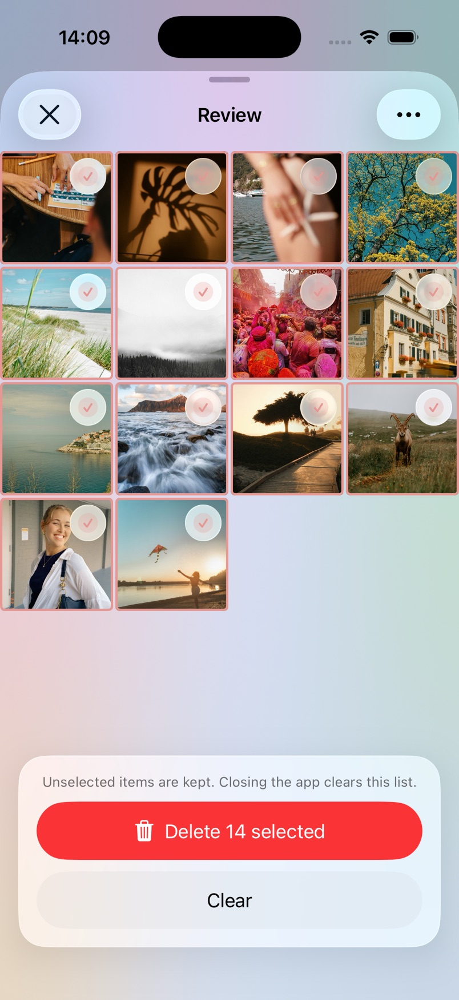
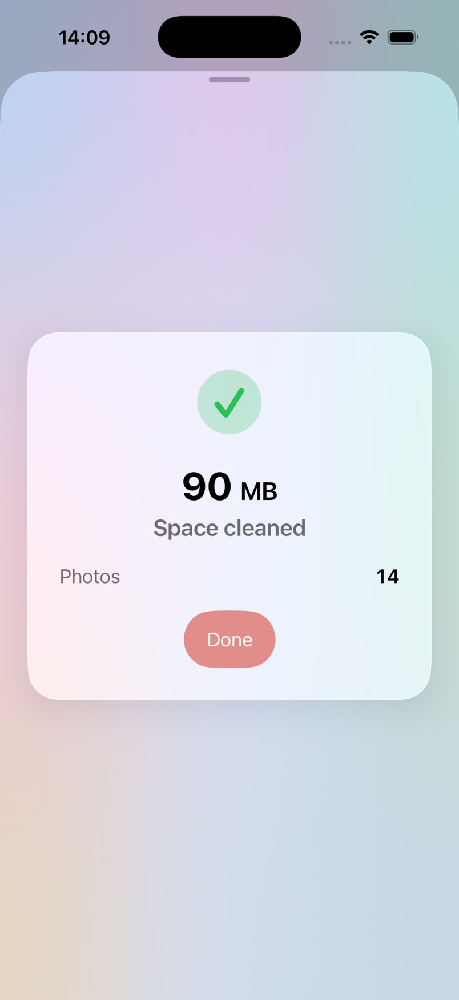

1
Pick a folder
Start with Recents, jump into a random month, or open any album. Each row shows thumbnails so you know what’s inside before you dive in.
Photo cleaner for iPhone
Right to keep. Left to queue. Nothing is deleted until you confirm. Nomopics works entirely on your iPhone — your photos are never uploaded.
Free on iOS 26+. Remove ads with a one-time purchase.
Nomopics is a Tinder-style deck for your Photo Library. Swipe through a month or album, queue what you don’t want, and review the list before iOS moves anything to Recently Deleted.
Start with Recents, jump into a random month, or open any album. Each row shows thumbnails so you know what’s inside before you dive in.
Swipe right to keep. Swipe left to queue a delete. Glass Keep and Delete buttons do the same, and Undo takes the last card back.
Nothing is deleted while you swipe. Open Review, uncheck anything you want to keep, then confirm. iOS typically moves items to Recently Deleted so you can still recover them.
Close the app before confirming and the in-memory queue is cleared — those photos stay.


Nomopics uses Apple’s Photos framework on-device. There is no account, no backup of your library, and no copy of your pictures on our servers. Ads, if you haven’t removed them, are served by AdMob — tracking for personalized ads is optional in iOS Settings.